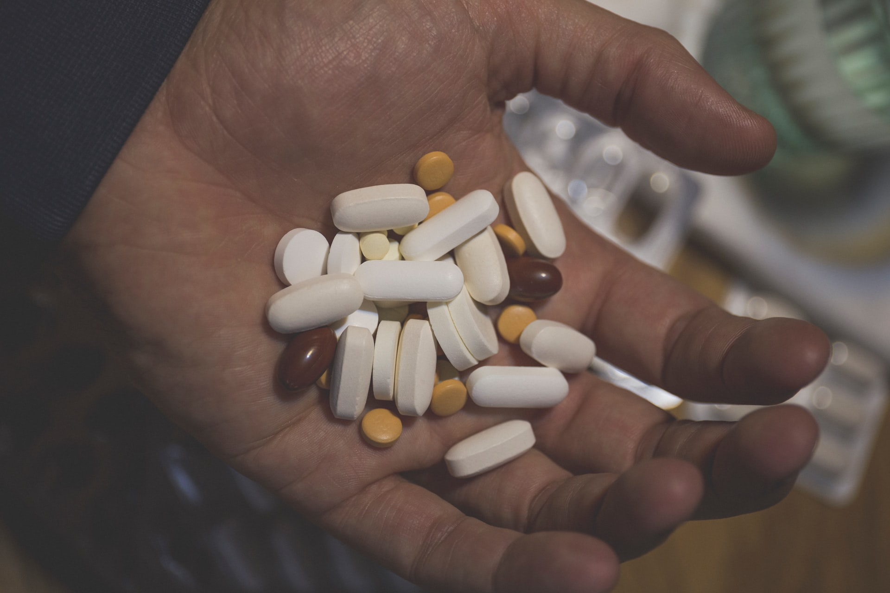

[Note] : No current medicine can prevent or cure COVID-19, but some medications may help alleviate symptoms and manage the impact of the virus.
A coronavirus known as SARS-CoV-2 causes the disease COVID-19. It triggers an inflammatory response throughout the body that can
result in damage to the lungs and various body systems.
When the virus emerged in 2019, doctors did not know how to treat it. Since then, scientists have been working round the clock to identify
treatment options, and now some therapies are becoming available.
This article looks at the medications currently available for treating symptoms at home and in the hospital. It also looks at the options for vaccines.
Acetaminophen
Acetaminophen (Tylenol), also known as paracetamol, can help relieve symptoms such as mild body aches, pains, and fever.
Acetaminophen is an analgesic and antipyretic. Analgesics help relieve mild-to-moderate pain. Antipyretics help reduce fever by preventing the production of prostaglandins,
which affect the regulation of body temperature.
Acetaminophen is available over the counter and online.

Nonsteroidal anti-inflammatory drugs

Nonsteroidal anti-inflammatory drugs (NSAIDs), such as ibuprofen and aspirin, can reduce fever, pain, and inflammation.
Similar to acetaminophen, NSAIDs reduce fever. They also have anti-inflammatory and anti-blood-clotting effects.
Early in the COVID-19 pandemic, the authors of one studyTrusted Source hypothesized that ibuprofen might worsen
COVID-19 by increasing the expression of an enzyme that facilitates SARS-CoV-2 infections. The enzyme is known as angiotensin-converting enzyme 2 (ACE2).
They believed this could increase the risk of developing severe symptoms.
However, the study did not look specifically at people who were taking ibuprofen with COVID-19.
The European Medicines Agency (EMA) and the Food and Drug Administration (FDA)Trusted Source say there is not enough evidence to suggest that NSAID use will have a
negative impact on clinical COVID-19 outcomes.
Learn more here about acetaminophen and ibuprofen.
Cough medicine
Cough medications may help manage coughing and a sore throat. There are two different types of cough medication.
Expectorants, such as Robitussin and Mucinex, help thin and loosen mucus, making it easier to expel from the lungs.
Cough suppressants, such as dextromethorphan (Delsym) and codeine, inhibit the body’s cough reflex. This type of medication may help treat a persistent dry cough.
Find out more about cough and cold medications.

Dexamethasone
In some cases, doctors may prescribe dexamethasone or another corticosteroid off-label for people who are in the hospital with severe symptoms of COVID-19.
Dexamethasone can help reduce inflammation and manage septic shock. Alongside antiviral therapy, it may help prevent severe symptoms and damage to the lungs and various body systems.
A preliminary report published in July 2020 suggested that it may reduce the risk of fatality due to severe symptoms.
However, corticosteroids can have severe adverse effects, which means a doctor must monitor their effects carefully. They are for short-term use only.
Bamlanivimab

In November 2020, the FDA gave Emergency Use Authorization (EUA)Trusted Source for doctors to prescribe bamlanivimab, in some cases.
Bamlanivimab is a neutralizing monoclonal antibody. It targets a part of the spike protein that enables SARS-CoV-2 to enter cells. In other words, it may stop the virus from entering cells.
Doctors may use it for people with symptoms of COVID-19 who are not in the hospital but have a high risk of developing severe illness due to their age or an existing health condition.
However, there is little evidence to show whether it works or not. In addition, supplies of this drug are limited. Until research is complete, experts do not recommend widespread use of this drug.
EUA is not the same as full FDA approval. If further evidence suggests that the risks of using a drug outweigh the benefits, the FDA may withdraw the EUA.
Remdesivir (Veklury)

Remdesivir (Veklury) is a new, broad-spectrum antiviral drug that may slow the development of the virus in the body.
Antiviral drugs can reduce the intensity and duration of viral infections. Some antivirals prevent viruses from replicating, while others help stop the virus from infecting new cells.
Research suggests remdesivir can reduce recovery time for people who are receiving hospital treatment for a lung infection due to COVID-19.
Veklury was the first drug to have FDA approvalTrusted Source to treat COVID-19.
END